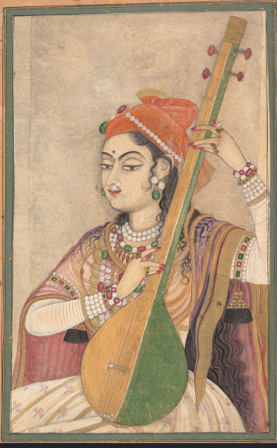

Jharkhand Tribal Music is an important part of the culture and traditional of jharkhand.
It is connected with traditional songs, dances, festivals and celebrations.
Jharkhand has a rich tribal culture. Music and dance are important parts of tribal life.